|
Back
【2015年度入部メンバー】
A. Sax
| 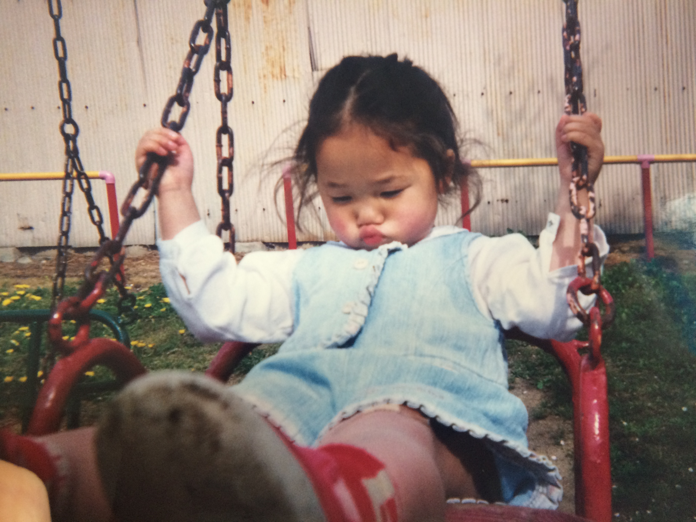 |
加藤 朱莉（カトウ アカリ） |
あかりんです |
| フランス語学科 |
Bonjourです |
| 食べることがだいすき |
チョコレートには目がないです |
| コメダで働いてます |
オススメはフィッシュフライバーガー |
| 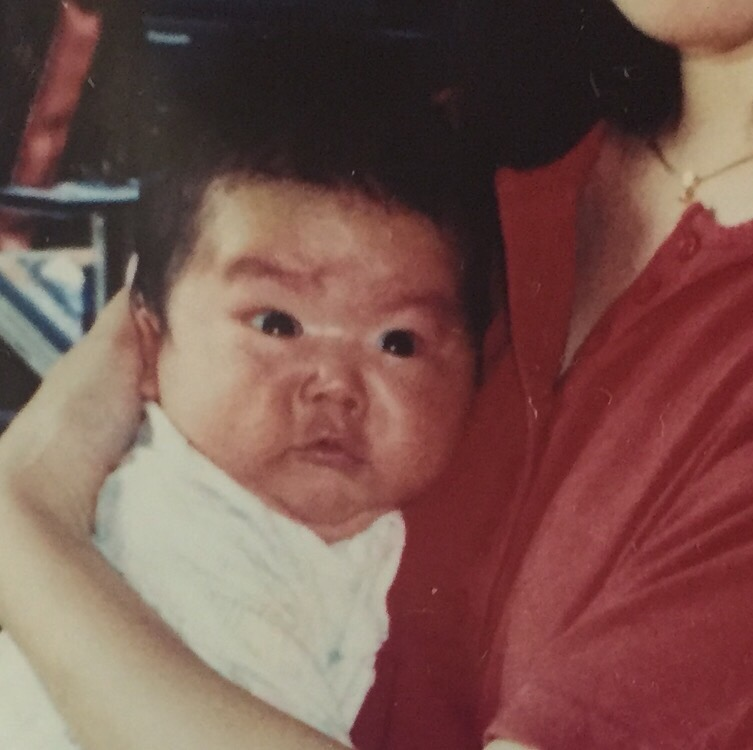 |
汐見 虹（シオミ コウ） |
7月18日 |
| B型 |
名大経済 |
| 時空が歪んでます |
音楽経験０です |
| でも頑張ります |
いぇーい |
| 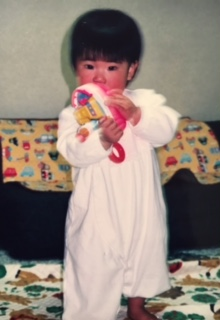 |
中川 茉優（ナカガワ マユ） |
3月生まれ |
| 医学部 |
nurseのたまご１ |
| 中高はクラリネット |
大学からサックス始めました |
| チーズがすき |
エビとアボカドがすき |
T. Sax
| 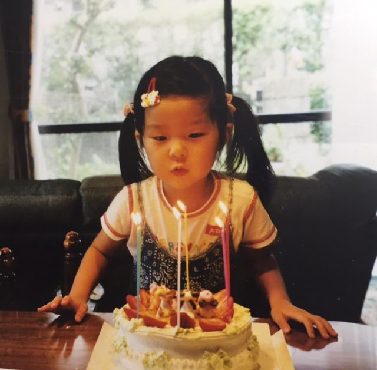 |
伊地知 彩香（イジチ アヤカ） |
ましゅーです |
| 9月17日生まれ |
血液型はわからないです |
| 経済学部です |
数学が苦手です |
| 甘いものが好き |
早寝遅起き |
| 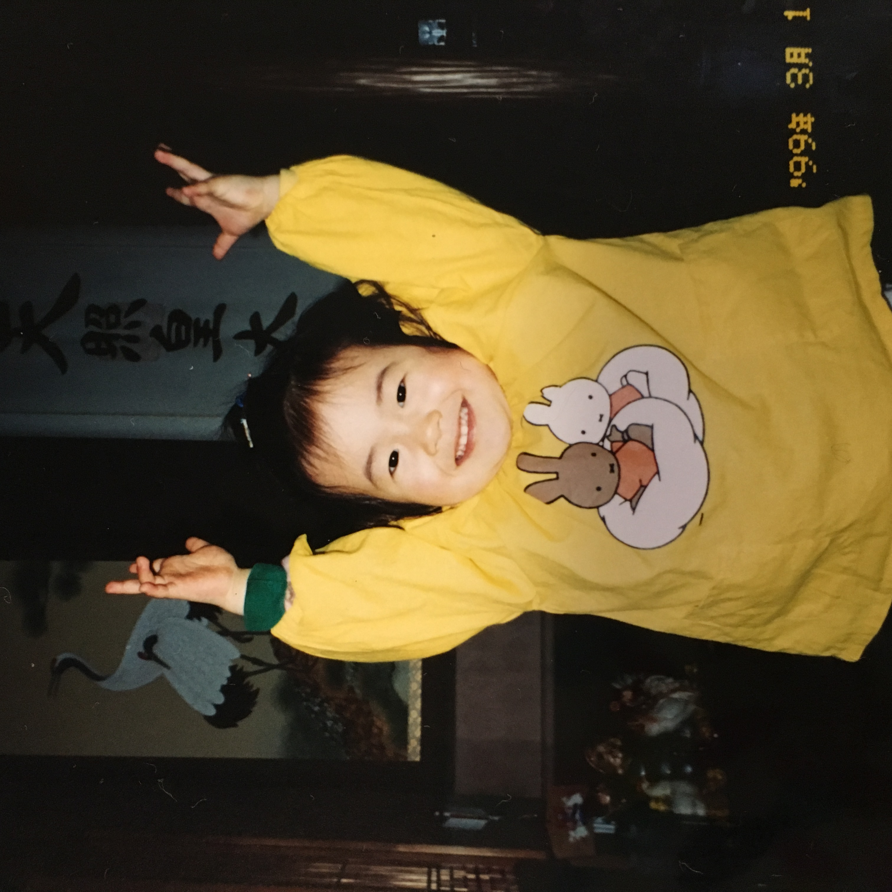 |
竹内 伽織（タケウチ カオリ） |
9月13日生まれ |
| A型です |
ジャズ初心者です |
| サックス初心者です |
フルートやってました |
| 女子大に通ってます |
マンゴーは食べません |
| 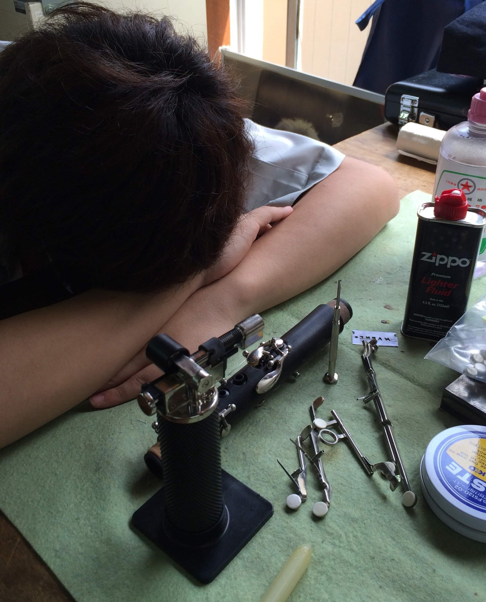 |
松井 颯汰（マツイ ソウタ） |
5月21日生まれ。 |
| あだ名はそーすけ。 |
でも本名はそうたなんです笑 |
| 大学生じゃないんです。でもちゃんと学生ですよ？専門学生なのです。 |
授業でも楽器を触る学校に行ってます。 |
| なんやかんや中学からJAZZやっているのです。 |
食べ物与えられると喜びます。笑 |
B. Sax
| 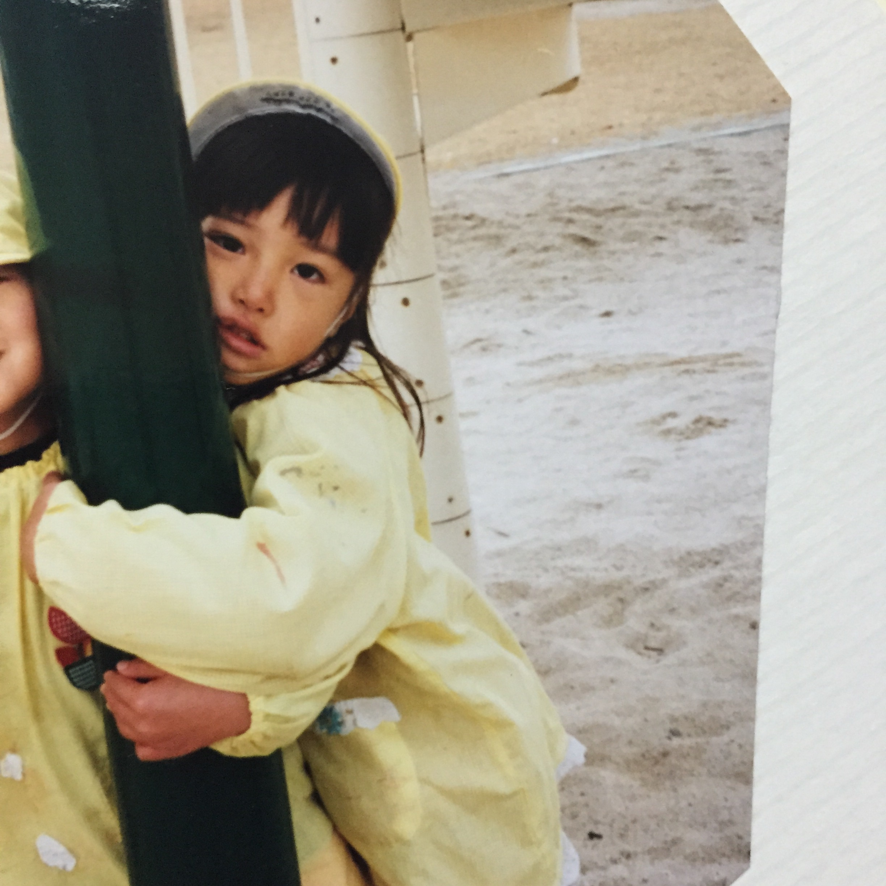 |
佐々木 毬花（ササキ マリカ） |
2月3日生まれ |
| nurseのたまご２ |
三重県 |
| 四日市市 |
もうすぐ下宿します（*＾＾*） |
| 氷をたべるびょうきです |
引かないでほしいです |
Trumpet
| 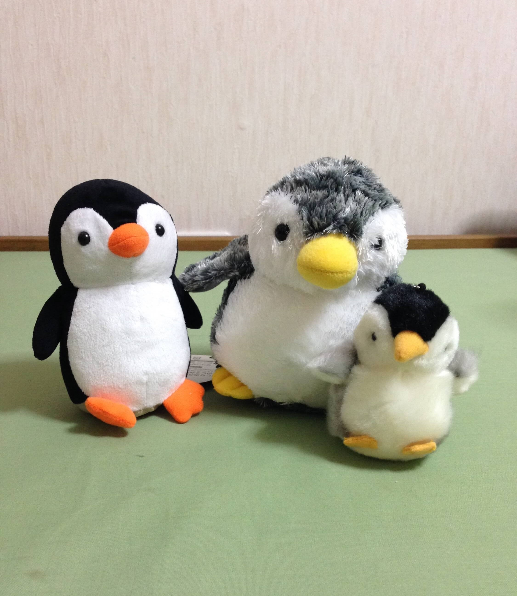 |
国本 泉（クニモト イズミ） |
8月5日生まれ |
| 名古屋大学経済学部 |
中高では吹奏楽部でした |
| ペンギンが好きです |
よちよち歩きがかわいいです |
| 水色と黄色と黒も好きです |
楽器ケースは水色です |
|
野崎 裕貴（ノザキ ヒロキ） |
1995年10月23日生まれ |
| 名大経済学部（Ｇ３０） |
人生の半分はアメリカとメキシコにいました。 |
| アメリカって呼ばれてます。 |
ハーフ疑惑浮上中。。 |
| WHY JAPANESE PEOPLE!? |
安心してください。純日本人です。 |
|
前田 美優（マエダ ミユ） |
5月12日生まれ |
| O型です |
B型っぽいといわれます |
| ジャズ6年目です |
ラーメンがすきです |
| 女子大に通ってます |
わりとどこでも寝れます |
|
吉川 碧海（ヨシカワ アオミ） |
名大 工学部 化学生物工学科 |
| 川越シェフと誕生日が同じらしいです |
中学校では吹奏楽 |
| 高校ではソフトテニスやってました |
ジャズは初心者です |
| 身長147.4㎝涙 |
ちっちゃくないです！！！ |
Trombone
| No Image |
實岡 美雛（サネオカ ミヒナ） |
好きな食べ物はセロリ |
| 顔が柴犬と言われます |
星野源が大スキ |
| 早口で声が大きいです |
あだ名はミッフィー |
| 誕生日はクリスマスの2日後 |
オン眉 |
| 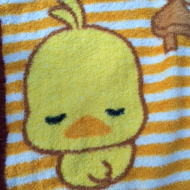 |
田中 瑞希（タナカ ミズキ） |
11月20日生まれ |
| 名大医学部保健学科 |
Ｂ型 |
| トロンボーン初めて2年目です |
とてもむずかしい |
| くららって呼ばれています |
時空が歪んでいるような・・・？ |
Piano
| 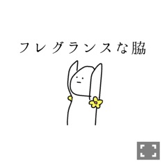 |
久野 文菜（クノ アヤナ） |
あだ名はくの |
| ついったーのなかのひと |
小学生の頃からついったらー |
| がっこうが何故か豊田市 |
チェックシャツ学部 |
| ＳＳＪＯ出身 |
圧倒的ジャズ・・！ |
| 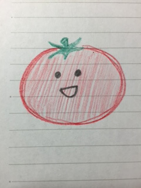 |
白木 和季（シラキ カズキ） |
農学部 |
| 好きな食べ物はトマトです |
トマトジュースは飲めません |
| 吹奏楽でバスクラやってました |
好きなお菓子はべっこうあめです |
| ピカチュウウミウシを見てみたい |
ピカチュウよりピッチュウ派です |
Guitar
| No Image |
中屋 栞（ナカヤ シオリ） |
誕生日は七夕です |
| 愛知教育大学通ってます |
嵐好きです |
| 甘いものが好きです |
エビ苦手です |
| ギター初心者です。 |
以前はTbとTpやってました |
|
森 大樹（モリ ヒロキ） |
よく、だいきと間違われます |
| B型男子です |
ギターがすきです |
| 家で犬とたわむれてます |
舞茸すきです |
| えのきすきです |
しめじは苦手です |
Bass
| 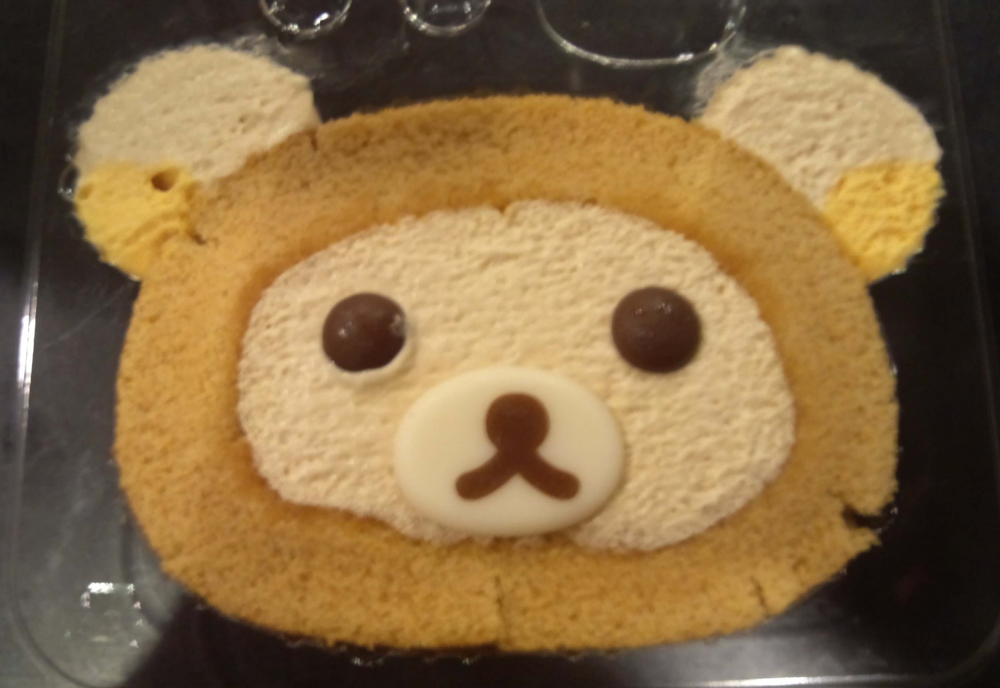 |
荒木 由希（アラキ ユキ） |
名大の農学部です |
| 人見知りする |
仲良くなると歌い出したり踊り出す（かも） |
| リラックマ与えると喜ぶ |
運動音痴、方向音痴、音痴 |
| ピカチュウウミウシに会いたい |
多肉植物ください |
| 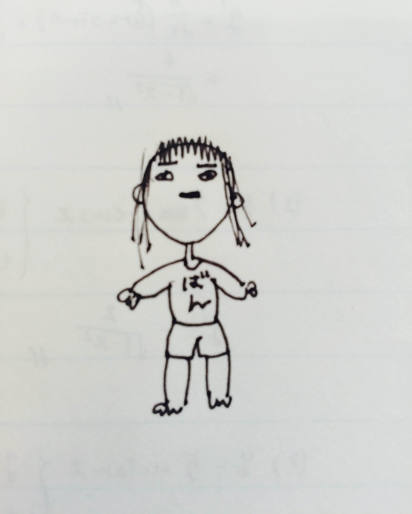 |
阪 風花（バン フウカ） |
10月30日うまれ |
| なごやだいがく |
じょうほうぶんかがくぶ(文系) |
| スキーできます。 |
鳥をかっている |
| おなか弱め |
ばんです。 |
Drums
| No Image |
上野 亮汰（ウエノ リョウタ） |
愛知工業大学 |
| 男 |
ドラム |
| メガネ |
マスク |
| 黄色い尻尾 |
猫飼ってます |
| 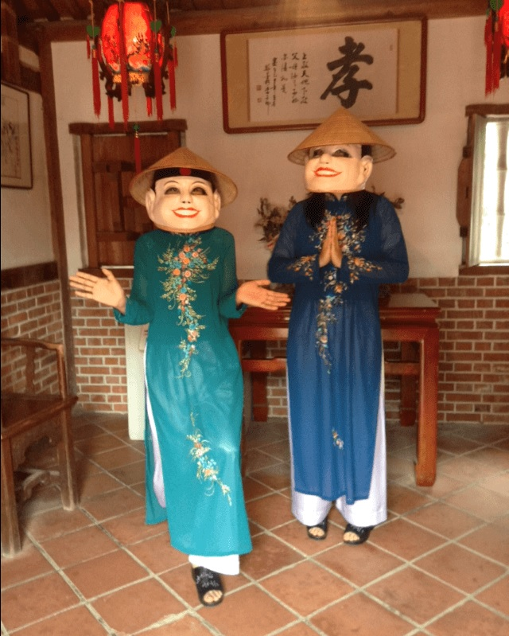 |
竹内 みず希（タケウチ ミズキ） |
女子大保育科 |
| 女の中の女 |
どすこいどらむす。押忍。 |
| ナスが好きです。 |
深い意味はないです |
| みーずー先輩とお誕生日が一緒です。 |
チャームポイントは足の薬指です☆ |
|
山川 指揮（ヤマカワ タクト） |
名古屋大学工学部物理工学科 |
| ドラム隊やで |
せやけど弦楽器もやりまんねん |
| こってこての大阪人でっせ |
口悪いけど怒ってるわけちゃうねん |
| 1996年9月2日生まれやで |
ほなぼちぼち頑張って行きますわ～ |
Back
|